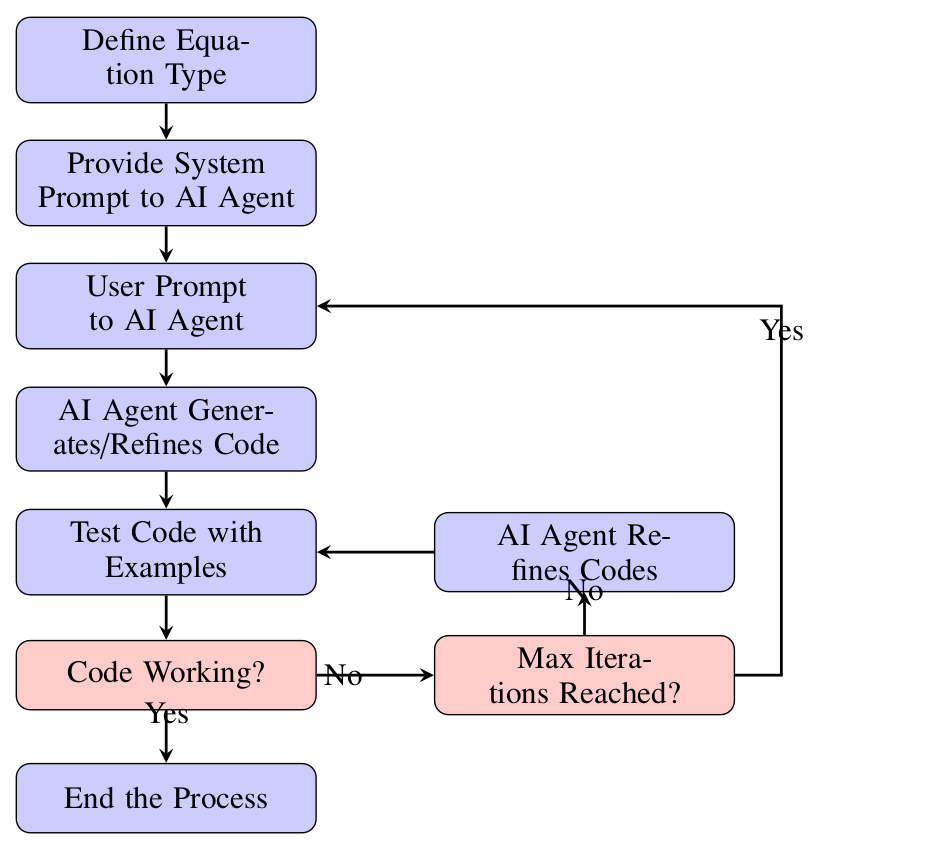
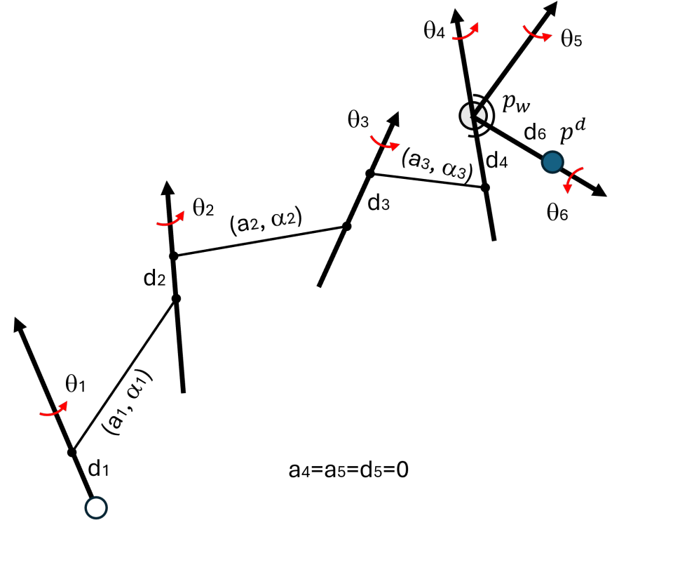
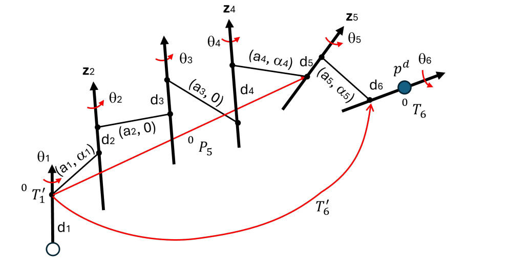

Large Language Model Assisted Human-AI Collaborative Development of Analytical Inverse Kinematics Solvers for Robot Manipulators
Mechanism and Machine Theory, Vol. 222, 106392, 2026




Abstract
This paper presents a large language model (LLM) assisted process for developing analytical closed-form inverse kinematics (IK) solvers for robot manipulators. The collaborative workflow enables human experts to supervise AI agents through carefully designed prompts, while AI handles all coding, symbolic manipulation, and testing. This division of labor leverages each party’s strengths: human intuition for problem decomposition and strategic guidance versus AI capability for systematic execution of labor-intensive tasks. The methodology comprises two key components: (1) a library of robust helper functions for common trigonometric equation systems, and (2) structured prompts that direct AI agents through derivation, code generation, and validation. Refined prompts significantly reduce iterative exchanges. We demonstrate the methodology on two major 6R robot architectures—spherical wrists and parallel joints—representing over 90% of industrial manipulators. The resulting solvers achieve 100% success rates across 842 industrial robots and 1000 random configurations, with working code produced in minutes rather than weeks. This work establishes a new paradigm where human expertise guides AI execution, significantly reducing development time while maintaining mathematical rigor.
Presentation Video
Results
Two kinds of tests were conducted to validate the solvers: (1) real-robot validation using industrial robot models from the RobotKinematicsCatalogue database, and (2) stress testing with selected degenerate/edge cases of DHM parameters as well as randomly generated DHM parameters. All solvers and test codes were implemented in Python and executed on a desktop with an Intel i7-10700KF CPU @ 3.80 GHz and 32 GB RAM.
| Test Type | # Robots | Tests / Robot | Success Rate | Avg. Time | Max Error |
|---|---|---|---|---|---|
| Real Robots | 723 | 10 | 100% | 1.22 ms | 2.19×10−9 |
| Random Robots | 1000 | 20 | 100% | 1.17 ms | 2.68×10−11 |
| Test Type | # Robots | Tests / Robot | Success Rate | Avg. Time | Max Error |
|---|---|---|---|---|---|
| Real Robots | 119 | 10 | 100% | 1.79 ms | 3.45×10−9 |
| Random Robots | 100 | 10 | 100% | 1.12 ms | 1.82×10−9 |
Across 842 industrial robots and 1000 randomly generated configurations, both solvers achieve a 100% success rate with average solve times in the 1.1–1.8 ms range and maximum position errors on the order of 10−9 m or lower—close to the limits of double-precision floating-point arithmetic. No iterative refinement or convergence criteria are needed, confirming the analytical nature and numerical stability of the derived solvers.
Generated Scripts & Data
- Helper trigonometric equation solvers (CAS-derived, stress-tested): haijunsu-osu/kinematics_eq_solvers
- Spherical wrist 6R solver, prompts, and benchmark scripts: haijunsu-osu/llm_ik_6r_wrist
- Parallel-joint 6R solver, prompts, and benchmark scripts: haijunsu-osu/ik_6r_parallel
- Robot kinematic data used for validation: SaltworkerMLU/RobotKinematicsCatalogue
BibTeX
@article{Su2026-LLM-IK,
title = {Large language model assisted human-AI collaborative development of analytical inverse kinematics solvers for robot manipulators},
author = {Su, Hai-Jun},
journal = {Mechanism and Machine Theory},
volume = {222},
pages = {106392},
year = {2026},
issn = {0094-114X},
doi = {10.1016/j.mechmachtheory.2026.106392},
url = {https://doi.org/10.1016/j.mechmachtheory.2026.106392}
}